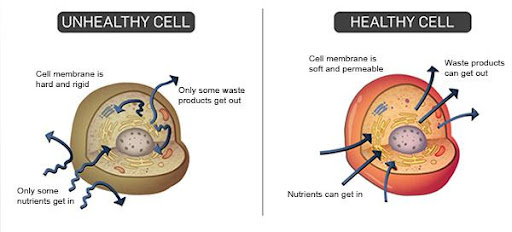
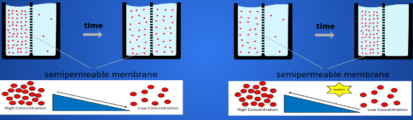
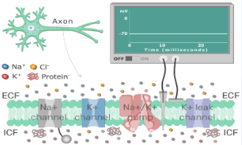
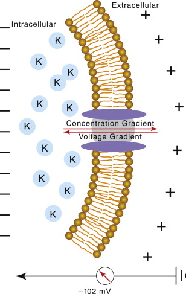
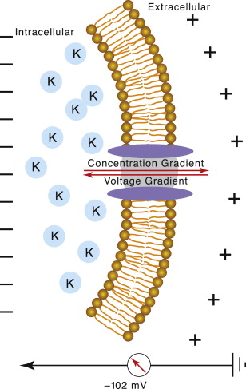
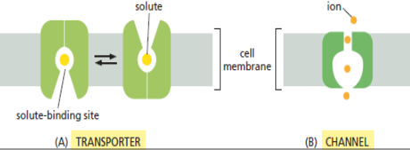
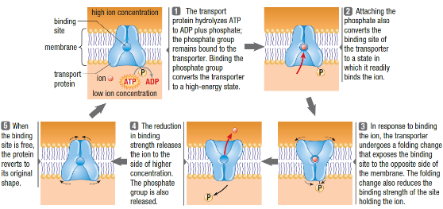
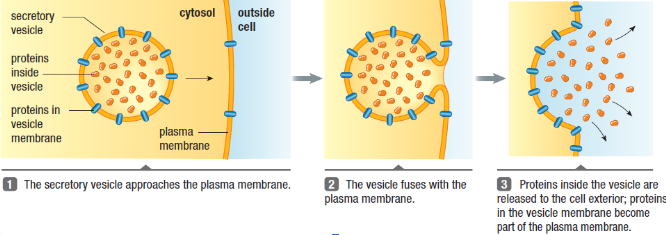

Transport Across Membranes
Callout
Transmembrane Transport
In order to survive and grow, cells must be able to exchange molecules with their environment. They must :
-
Import nutrients such as sugars and amino acids.
Endocytosis
1.jpg)
-
Eliminate metabolic waste products.
-
Regulate the concentrations of a variety of inorganic ions in their cytosol and organelles.
-
Permute diffusion of essential gases such as CO2 and O2.
Those transfers depend on specialized membrane transport proteins that span the lipid bilayer, providing selective passageways across the membrane.
.png)
Callout
Concentration Gradient
When a solute is more concentrated in one side of the membrane then the other, It generates a concentration gradient and will automatically moves from the area with the highest concentration to the area with the lowest concentration without spending energy.

Membrane Potential
Most cell membranes have a voltage across them, a difference in charge referred to as a membrane potential.
It exerts a force on any molecule that carries an electric charge. Since the cytosolic side of the plasma membrane has a negative potential relative to the extracellular side, the membrane potential tends to pull positively charged solutes into the cell and drive negatively charged ones out. This system is kept in balance with the help of passive and active transport proteins.
When a cell is unstimulated; the electrical charges inside and outside the cell are generally kept in balance, in such a steady state the voltage difference is called a resting membrane potential (in animal cells the resting membrane potential can vary from - 40 to è 70 mV where the inside of the cell is more negatively charged than the outside).

Callout
Electrochemical Gradient
The movement of a charged solute across the plasma membrane is driven by two forces:
-
The concentration gradient force: the solute tends to move with its concentration gradient.
-
The potential membrane force: the potential membrane moves positively charged solutes into the cell and negatively charged ones out.
The electrochemical gradient of a solute is therefore a composite of two forces, one due to the concentration
gradient and the other due to the membrane potential. This net driving force determines the direction that each solute will flow across the membrane by passive transport.
2.png)
Electrochemical Gradient
-
The potassium ions K+ are more concentrated on the internal side of the membrane than on the external side.
-
Which generates a concentration gradient from the inside to the outside of the cell, That means K+ moves automatically from the outside surface to the inner surface.
-
Since the interior surface of the membrane is negatively charged and the exterior is positively charged, the potential membrane tends to move negative charges inside the cell and positive ones outside.
-
The rate of the electrochemical gradient of K+ is weak since both driven forces are opposite to each other.
11.png) 

Passive Transport
The free movement of a substance across a membrane down its concentration gradient means from a region of higher concentration to a region of lower concentration without the need to expend chemical energy is called ‘’Diffusion”.
Diffusion is the primary mechanism of solute movement within a cell and between cellular compartments separated by a membrane. It happens in one direction until the concentrations on both sides of the membrane become equal.
1.png)
Simple Diffusion
Simple diffusion is the ability of substances to move across a membrane unassisted.
Facilitated Diffusion
.png)
Accordion
Carriers
1.png)
Active Transport
Active transport Is an energy dependent movement of substances against their concentration gradient using protein complex called “pumps”.
About 25 % of a cell’s chemical energy (ATP) requirements are for active transport.

Primary Active Transport
-
The Na+-K+ ATPase pump transports Na+ out of the cell as it carries K+ in the plasma membrane (that are respectively enters and leaving the cell through other transporters and ion channels)
-
This transport is against their electrochemical gradient and therefore it uses the energy derived from ATP hydrolysis.
-
This hydrolysis induces a series of protein conformational changes that drive the Na+/K+ ion exchange.
-
As part of the process, the phosphate group removed from ATP gets transferred to the pump itself.
.png)
Callout
Secondary Active Transport
-
A secondary active transport pump uses the concentration gradient of an ion, established by a primary pump, as its energy source to move a solute across the plasma membrane.
.png)
Osmosis
Osmosis is the diffusion of water across a membrane from an area of lower solute concentration (high water concentration) to an area of greater solute concentration (low water concentration) and is therefore influenced by any difference or change in solute concentration on either side of a membrane.
.png)
Endocytosis & Exocytosis
Small molecules are transferred across the plasma membrane through transporter systems: passive transport or active transport.
Larger molecules are imported or exported within the cell with two respective energy-dependant mechanisms: endocytosis and exocytosis. Exocytosis

Phagocytosis
-
The cell forms pseudopods to trap and then engulf particles such as bacteria, parts of dead cells, or viruses.
-
The vesicle formed is called a phagosome which fuses with a lysosome filled with digestive enzymes.
-
The lysosome digests the particles and export wastes of the cell.
.png)
Callout
Pinocytosis
Pinocytosis means “cell drinking” : extracellular water is taken in, along with any molecules dissolved in water. .png)
Receptor-mediated Endocytosis
-
The molecules to be taken in are bound in the exterior side of the membrane by specific receptor proteins.
-
The molecules binding with receptors collect into a pit coated with a network of proteins, called clathrin.
-
The coated pit breaks free of the membrane to form a coated vesicle.
-
In the cytosol, the vesicle loses its clathrin coating and may fuse with a lysosome.
-
Enzymes within the lysosome digest the cargo into smaller molecules useful for the cell.
Callout